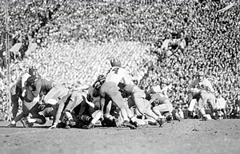

|
The Cardinal and the Tiger?
Facing another year where the Stanford University football team will be crushed by Cal’s, the fifth consecutive time for those keeping score, our school stands at a bit of a crossroads. Berkeley coach Jeff Tedford is consistently producing top-25 football teams with Heisman candidates. We find ourselves in ESPN’s Bottom 10 rankings. These two facts mean that we won’t be beating Cal in football for the foreseeable future, which begs the question: should we continue to care about Cal? They have a much larger student body and lower academic standards for athletes. One Cal newspaper even declared that we were unfit to be rivals.
Veteran’s Day Rally Garners Small Crowd
A lunchtime rally commem-orating Veteran’s Day was held on Monday, November 13th in Stanford’s White Plaza. Because students did not receive the day off, however, the holiday remained largely forgotten. The event itself was organized primarily by junior Marissa Cramer, without assistance from any student organization. Cramer stated that she was motivated and aided by her fellowship at the Foundation for Defense of Democracy to be a campus activist. In an environment where many students have very little connection to individual soldiers or veterans, Cramer hoped the event would increase awareness of the great sacrifices made by a select few for the benefit and protection of all.
Why We Sometimes Let Them Win
Our alumni often wonder why there doesn’t seem to be the spirited rivalry between UC Berkeley and Stanford that was present back in the “good old days” when they were here. The simple answer is that Stanford students have become keenly aware of the significant leaps and bounds Stanford has taken in order to be an entirely better university than the college-that-shall-not-be-named. But alumni should take no offense at this – it is through their Herculean efforts to craft the globe that we’re able to claim this mantle.
Political Partisanship: The Challenge of a Generation
Last July, Mexico held a presidential election to succeed President Vincente Fox. In what was perceived as an upset, conservative Felipe Calderon narrowly defeated liberal Lopez Obrador. Reminiscent of 2000 Florida, accusations of corruption in the voting process abounded, including the conspicuous presence of a space for a write-in candidate, when election laws in Mexico require every candidate to be registered with a political party.
Renewal: Cheer Up, Sad Stanford!
Next year’s headlines? No, I lifted these words from an AP story from November 23, 2002, and just reversed “Cal” and “Stanford.” That was the magical year (for Cal) that ended a seven-year Big Game losing streak, brought home the Axe, and lead Bears fans to tear down their own goalpost. It capped Cal’s first of many successful years under coach Jeff Tedford, who has fantastically rebuilt the Bears’ team.
Time for Harris to Go?
Stanford’s recent problems in football—a near-winless season the most prominent among them—began not this year, but two years ago in December 2004. In its infinite wisdom, Stanford somehow decided to hire University of Pittsburgh coach Walt Harris over Norm Chow, who was at the time USC’s offensive coordinator, as the new football coach.

Tradition: Great Moments in the First Fifty Years of Cardinal Football
The first fifty years of Stanford Football are a story of spontaneity, inventiveness, hubris, and glory. The free-thinking independence and determination of those early teams remind us just how successful Stanford students can be when they put their mind to something, and give us an ideal to live up to both as we march into this year’s Big Game, and many seasons to come.
|
Autopsy Report
The Miami Herald reported that Hugo Chavez was celebrating. The Associated Press indicated that Israelis feared the consequences. The New York Post proclaimed that Al Qaeda was happy. Reuters indicated that our allies were embarrassed. European and Middle Eastern presses gloated on their editorial pages. Comedian Stephen Colbert declared, in a live broadcast, that the terrorists had won.
The Living Wage at Stanford
Two weeks ago, I received an e-mail petition titled “A Real Living Wage Now!” sponsored by Alexandra Goldman of the Stanford Labor Action Coalition (SLAC). It criticized Stanford president John Hennessey for allowing some Stanford staff to work for less than the University’s official “living wage.” Then, the petition went on to claim that even this “living wage” was insufficient in itself.

A Tribute to Milton Friedman
On Thursday November 16, 2006, the world lost Dr. Milton Friedman, one of its greatest minds. Milton Friedman’s economic philosophy embodies the American dream and gave rebirth to the ideals of liberty that founded our nation. At the core of his theories was a strong belief in the value of personal freedoms and individual responsibility. His work not only supported capitalism over communism during the Cold War, it advocated that the capitalists be more capitalist.
The Rise and (Possible Fall) of John McCain
While few Republicans would claim that anything good came out of the 2006 Election, one key party member managed to gain quite a bit: Senator John McCain. Just three days after the Republicans lost control of Congress, McCain announced the creation of a 2008 Election “exploratory committee”--bank account and all. While the Senator from Arizona has long appeared interested in a 2008 bid, the committee is his most serious step yet. Then, on November 11th, Senator McCain stood before the Federalist Society and GOPAC (a key Republican political committee) to offer his interpretation of the recent election results. America had not embraced the Democrats, he said, but, rather, rejected the Republicans; the GOP had been complacent, financially reckless, power--hungry, overly partisan, and even “uncivil.” He then called for “common sense conservatism.” But McCain was not simply reflecting on current events. Rather, by diagnosing the Republicans’ illnesses, Sen. McCain had implicitly offered himself as the antidote.
Forum: Is Peace Possible in Israel and Palestine?
At the beginning of this volume, Tucker Herbert, World Editor for The Review, wrote a piece titled “Is Peace Possible?” regarding this summer’s turmoil in the Middle East. The implicit hope of that question is that the answer is “yes” – but any solution will be as complex as the historical background that it reflects. The international dialogue continues to be dominated by hostility and a lack of understanding. At Stanford, there are a number of students of Arab and of Israeli background. As Stanford students, we take the same classes, cheer for the same Cardinal, and coexist in harmony, so the cultural and political differences should be far less extreme than on the world stage. Here we present two viewpoints, and the goal is to present these ideas in a forum that is less polarized than the land between the Jordan River and the Sinai Peninsula.
Who Really Invented the Card Stunt?
The Card stunt started as a way for Stanford to make-up for the smaller size of their cheering section in the Big Game. Ralph Fitting sets the scene for the 1904 Big Game: “What Stanford lacked in numbers, it made up in campus-wide Stanford spirit. The memory of the stolen Axe clung vividly in the minds of everyone; kept alive by the colorful Axe Yell. Revenge was the pass-word.”
|